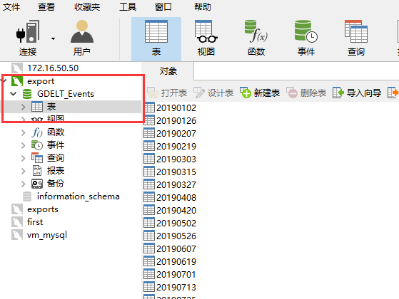
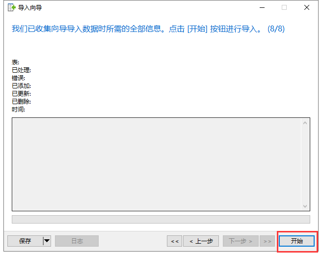

navicat工具批量录入xlsx文件进mysql数据库
1.navicat连接好数据库后，选中表这个栏

2.右击“表“这个栏目，选择”导入向导“
3.选择xlsx文件，点击下一步
4.选择要导入的文件，并选择xlsx文件中的一个表,点击下一步
5.这里的栏目名行、第一个数据行默认会填好，直接下一步
注意：第一个数据行如果为1时，那么xlsx表中的表头数据会被略过
6.修改录入数据库后的表名
7.这个界面已经看到数据表的字段已经分好了，继续下一步
8.这里选择高级，选中“用空白字符串取代null”，目的是表中如果有空的字段，会用null替换
9.点击开始，详细信息中出现Successfully，表示完成，点击结束，这时，一个xlsx表就导入到数据库中了，小伙伴，赶紧试试吧

未完待续~~~